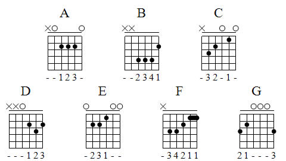
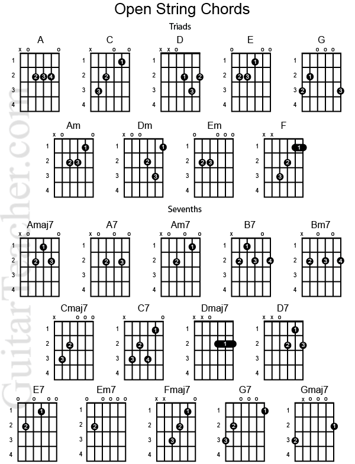

Chord Charts show the positions your fingers go in to create a chord on the guitar.
Each vertical line represents a fret (metal strip).
The X’s on the top of the chart determine the muted strings.
This simply means that you rest your finger or thumb upon the string so it doesn’t make noise even when strummed.
The O’s determine the open strings, or strings that you don’t touch, but still play.
The numbers on the chart refer to the fingers you use to press down the string. “1” is your index, “2” is your middle finger, “3” is your ring finger, and “4” is your pinky finger.

Beginner Chord Chart
This chart is for new guitarists who are looking for a place to start.
These chords can get you through quite a few popular songs and are quite simple to learn.

Advanced Chord Chart
This chart includes some more advanced chords for players that have learned all of the beginner chords and wish to continue to learn more.